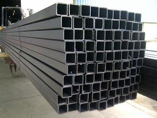

Jual Genteng Metal di Malang ☎ 0822 4582 0777 (Rinanti)
Pada kesempatan kali ini, kami berkesempatan untuk membahas beberapa produk tentang atap. Tergantung setiap kebutuhannya, bagi bangunan yang megah mungkin beton akan menjadi pilihan. Keberadannya pun sudah menggeser kayu dan bahkan sewaktu-waktu dapat menggantinya. Disini, galvalum mempunyai peran penting sebagai atap sebuah bangunan. Selain atap, adapula rangka atap yang berfungsi sebagai penyangga atap. Banyak sekali jenis ragam atap mulai dari yang konvensional sampai modern yang dapat digunakan dalam sebuah pembangunan. Ada pula atap galvalum dengan bentuk unik seperti atap lengkung, gelombang dan lain sebagainya.
Distributor & Supplier Genteng Metal

Kami adalah distributor genteng metal Malang, tersedia berbagai ukuran dan varian genteng metal Malang. Sebelum itu, kami akan menjelaskan apa itu genteng metal Malang dan genteng metal Malang pasir. Salah satu dari kelebihan genteng metal Malang adalah lebih membuat rumah anda bersih, rapi, lebih anti bocor, dan juga lebih ringan. Selain itu genteng metal Malang dinilai lebih anti bocor. Dengan berbagai keunggulan yang sudah saya jabarkan diatas, maka apalagi yang anda tunggu untuk mendapatkannya? Segera dapatkan genteng metal Malang tersebut di official situs kami di dis.or.id dan dapatkan penawaran menarik. Jika anda masih agu lagi, kami sarankan untuk anda untuk mengubungi kami secara langsung.
kami berusaha mencari kepuasan pelanggan kami.
Info Pemesanan Selengkapnya
Google Maps: https://www.google.com/maps/d/u/0/viewer?mid=18K_Vf8GKnjN9AtE2jUMATDSYvScojDst&ll=-7.269373870070218%2C112.655575&z=16
Note: https://www.facebook.com/notes/distributor-of-industrial-supply/pabrik-supplier-genteng-metal/1783191985314014/
Event: https://www.facebook.com/events/1480458558737554/
Portfolio Produk: https://www.facebook.com/pg/DistributorOfIndustrialSupplyDIS/photos/?tab=album&album_id=1683750531924827
Distributor & Supplier Besi Beton

Besi beton adalah besi yang digunakan untuk penulangan konstruksi beton atau biasa dikenal sebagai fungsi badan bertulang. Besi beton ulir yaitu besi beton dengan bentuk permukaan khusus bentuk sirip melintang seperti ikan ataupun dengan rusuk memanjang dan memiliki pola tertentu yang dipilih pada proses produksinya. Besi beton dapat menjadi pondasi pada bangunan yang kuat sehingga membuat bangunan yang aplikasikan besi ini dapat kokoh dan tahan lama. Maka dari itu anda harus selektif untuk menentukan besi beton mana yang sesuai dengan yang anda inginkan.
Salah satu cara untuk mendapatkannya adalah dengan membeli di dis.or.id. Anda bisa mendapatkan besi beton dengan harga yang sangat murah dan terjangkau.
Distributor & Supplier Steel Grating

Plat Grating tersebut dibuat dari jenis baja dengan kualitas yang tinggi kemudian dilas antara satu dengan yang lain. Untuk permukaan atas bagian kiri didesain bergerigi agar tidak membahayakan Anda. Grating ini disusun dari baja berkalit dan dilas di bagian permukaan silangnya. Tentunya dengan berbagai model dan tipe yang beragam. Dengan mencaro steel grating kualitas terbaik, pastinya kualitas bangunan yang anda bangun akan lebih kokoh dan tahan terhadap berbagai cuaca. Grating banyak digunakan dalam pembangunan lantai seperti deck, pabrik, tangga, industri, minyak, pertambangan, dan masih banyak lagi.
Kini anda bisa mendapatkan steel grating dengan harga yang sangat murah namun tetap memiliki kualitas dan mutu yang terbaik dengan mengunjungi dis.or.id. Disana anda bisa mendapatkan steel grating dengan berbagai ukuran tertentu dengan harga yang sangat terjangkau namun berkualitas dan bermutu tinggi.
Distributor & Supplier Pipa (Hitam/Gas, Galvanis)
.jpg)
Apa bedanya pipa hitam gas dibanding dengan jenis pipa biasa? Perbedaan antara kedua pipa ini bisa anda lihat langsung pada pengaplikasiannya. Setiap konstruksi bangunan pasti akan memanfaatkan jenis pipa hitam karena ia sangat kokoh, bahkan bagian luarnya telah terlapis oleh stainless steel sehingga menjadikannya tahan korosi. Terlihat dari namanya saja, pipa hitam ini memang dibuat khusus untuk kebutuhan pertambangan minyak gas, untuk itu nama lain dari pipa hitam adalah pipa gas. Karena sudah terlapisi dengan stainless steel pipa ini dapat diaplikasikan pada segala kondisi cuaca di Indonesia. Pipa hitam gas terjual dengan berbagai ukuran, ukuran paling kecil yang tersedia adalah ½ inc dan paling besar 40 inc. Hubungi saja kontak kami untuk melakukan konsultasi mengenai kebutuhan pipa hitam gas galvanis bagi proyek industri anda.
Distributor & Supplier Kawat Bronjong/Gabion

Kawat bronjong berfungsi sebagai pencegah erosi. Kawat ini juga ada yang berbahan galvanis. Ini mencegah longsor yang mengakibatkan bangunan atau jalan yang berada di atas tebing mengalami kerusakan ketika tanahnya mengalami erosi. Agar tidak berkarat sehingga bisa bertahan dalam kurun waktu yang lama, kawat ini dibuat dari bahan galvanis yang anti karat. Tujuannya agar bebatuan tidak hancur karena terkena ombak terus menerus.
Jika anda sedang mencari kawat bronjong, anda bisa datang dan mengunjungi situs dis.or.id. Karena disana anda akan mendapatkan penawaran mengenai kawat bronjong denga berbagai ukuran.
Distributor & Supplier WF H-beam

Saat ini, banyak orang yang ingin mencari jenis besi WF, terlebih ini zaman yang serba modern dan praktis. Besi jenis ini juga cocok untuk Anda pakai guna membangun rumah, industri, jalan raya, pagar, pabrik, dan masih banyak lagi lainnya. Untuk membuat bangunan seperti rumah, pagar, industri, jalan raya, pabrik, dan lain-lain Anda bisa memakai jenis besi ini. Anda juga bisa lebih gampang saat memakai besi ini karena sifatnya yang tidak terlalu berat dan bisa dibilang ringan dengan komponen yang seimbang.
Maka dari itu, kualitasnya sudah terjamin.
Kini anda bisa mendapatkan besi WF dengan kualitas terbaik dan mutu terjamin. Harga yang murah tentunya di dis.or.id juga menjamin kualitas dan mutu terbaiknya juga. Segera kunjungi situs tersebut dan dapatkan penawaran menarik. Pastinya dengan harga yang sangat terjangkau.
Distributor & Supplier Expanded Metal

Expanded metal ini bisa dibilang sebagai hasil dari kemajuan teknologi yang terbuat dari baja berkadar karbon rendah dengan kekuatan yang lebih tanpa harus di las serta tanpa menggunakan sambungan. Dimana Expanded Metal ini dibuat dengan menggunakan baja berkadar karbon rendah tanpa di las, tanpa sambungan dan dikenal lebih kuat. Umumnya dipergunakan sebagai kawat parabola, speaker grill, kawat nyamuk dan lain sebagainya. Umumnya dipergunakan sebagai partisi pengaman gudang, railing, pelindung mesin, pagar penjara, plafond, dan lain sebagainya.
Expanded Metal ada yang berbentuk diamond dengan model yang lebih menarik, kuat, ekonomis, serta tahan lama. Disana anda bisa menemukan dan memesan langsung expanded metal yang anda butuhkan.
Distributor & Supplier Plat (Hitam, Kapal, Bordes, Strip)

Apabila anda saat ini sedang mencari tempat atau toko yang jual plat hitam , anda dapat menemukannya di toko besi terdekat. Pada umumnya disebut plate kapal dikarenakan biasa digunakan untuk bahan pembuatan badan kapal dan mempunyai standart spesifikasi material yang beragam untuk spesifikasi. Dis.or.id menjual plat besi yang anda butuhkan dengan harga yang murah. Plat besi bordes ini saat ini lebih banyak digunakan sebagai bahan pembuatan mobil, terutama mobil pengangkut seperti truk, pick up, dan lain sebagai nya.
Di dis.or.id, anda dapat mendapatkan nya dengan harga lebih miring dibandingkan dengan toko besi lain nya. Segera hubungi nomor dis.or.id dan segera order karena dis.or.id adalah agen resmi yang langsung mengambil plat hitam ini dari pabriknya. Tak perlu lagi bingung mencari plat hitam yang murah dan berkualitas.
Distributor & Supplier Floor Deck (Bondex)

Floor deck ini adalah material yang bisa difungsikan sebagai media pengganti dari material konvensional yang umumnya berbentuk papan lebar, misalnya saja seperti triplek. Floor deck atau yang biasa disebut bondek adalah material yang berfungsi sebagai penyangga lantai cor. Untuk bahan utamanya sendiri umumnya berasal dari plat baja jenis galvanized dilengkapi dengan tulang. Selain itu, Floor Deck ini bisa dipasang pada konstruksi baja ataupun beton serta didukung dengan data perencanaan. Maka dari itu tidak mengherankan jika saat ini banyak yang lebih memilih menggunakan Floor Deck ini.
Jika anda saat ini sedang mebutuhkan floor deck dengan kualitas yang mumpuni, anda bisa langsung mengunjungi situs dis.or.id. Disana anda bisa mendapatkan info lebih lengkap dan detail mengenai harga dan spesifikasi dari floor deck. Pastinya dengan harga yang sangat terjangkau dan dengan mutu terbaik.
Distributor & Supplier Atap Galvalum

Atap galvalum mempunyai komposisi tertentu sehingga menyebabkan atap galvalum tersebut lebih kuat dan awet jika dibandingkan dengan bahan baja ringan lainnya.
Ada yang menjual per m2 tapi ada pula yang menjual dengan sistem lembaran. Selain memberikan banyak keuntungan, kesan pada rumah anda juga akan terlihat modern. Kerap kali disebut baja ringan, kekuatannya tidak kalah bila dibandingkan dengan baja konvensional.
Ada anggapan bahwa atap galvalum membuat suasana menjadi panas dan bersik. Jenisnya pun sangat beragam, ukurannya pun juga banyak sehingga gampang untuk menyesuaikan kebutuhan rangka atap anda. Bila bebannya berat maka anda harus memakai galvalum dengan ukuran yang lebih besar. Bahannya yang terkomposisi dengan baik membuatnya tidak berisik bahkan ketika hujan, tahan lama dan anti karat. Seng tidak dapat memantulkan panas dari matahari. Atap galvalum mempunyai banyak tipe, jenis dan ukuran yang sesuai dengan ukuran yang dapat anda pilih. Tentunya ada sudah mengetahui bahwa galvalum tidak bisa dimakan rayap bukan? Oleh karena itulah bila dibandingkan dengan kayu, maka saya rekomendasikan atap galvalum kepada anda.
Distributor & Supplier Atap Lengkung

Dewasa ini, atap terbuat dari berbagai bahan yang sangat terkomposisi. Tidak terkecuali gudang, halte, maupun peneduh bagi kendaraan.
Bentuk dari setiap atap tersebut sangat beragam. Seperti namanya, atap lengkung adalah atap yang bentuknya melengkung sehingga membuat bangunan yang dinaunginya terlihat megah.
Penggunaan atap lengkung contohnya adalah pada pembuatan atap stadion. Anda pastilah pernah melihat bahwa atap di salah satu stadion itu berbentuk lengkungan. Apabila anda sedang mencari atap lengkung dari galvalum yang satu ini. Bila anda tertarik untuk mempunyai atap lengkung pada bangunan anda maka janganlah ragu. Atap lengkung yang anda cari tentunya adalah atap dengan kualitas tinggi dengan harga terjangaku. Karena kami adalah tangan pertama yang bertindak sebagai supplier, toko sekaligus distributor.
Distributor & Supplier Truss Canal C
Anda pasti mengetahui bahwa truss atau besi kanal c ini tahan terhadap rayap. Besi kanal C sebutan untuk besi yang satu ini. Besi kanal C ini selain digunakan untuk konstruksi bangunan dalam pembuatan atap, juga bisa juga dan banyak juga yang menggunakan nya sebagai bahan otomotif, seperti kerangka mobil, sepedamotor dan onderdil lain nya. Jadi dengan kata lain, besi kanal C ini bisa dikatakan multi fungsi. Maka janganlah ragu dengan pilihan anda. Segala sesuatu juka diukur sesuai dengan ilmunya maka akan menghasilkan karya yang bangus serta hemat biaya. Kunjungi website dis.or.id untuk info lebih lanjut dan hubungi kontak yang tersedia sesuai dengan kebutuhan anda.
Distributor & Supplier Hollow Galvalum

Seperti yang telah saya tuliskan di beberapa artikel, salah satu fungsi dari Hollow Galvalum adalah sebagai rangka plafon atap rumah.
Selain dinilai lebih kuat, ternyata juga lebih ekonomis. Jika anda berencana membangun sebuah plafon, saran saya pilihlah ukuran yang saya sebutkan diatas. Studi penelitian telah mengungkapkan bahwa kerangkan plafon menggunakan jenis hollow ini bisa bertahan puluhan tahun. Namun sayangnya masih banyak pekerja bangunan yang masih terkendala dari segi pemasangan nya.
Distributor & Supplier Seng Gelombang

Seng gelombang memiliki banyak keunggulan dari berbagai sisi. Andapun wajib memperhatikan bagaimana atap bagian bangunan tersebut apakah berkualitas ataukah tidak, atap dengan kualitas rendah akan beresiko kerusakan maupun kebocoran yang pasti merugikan seisi bangunan ruangan tersebut. Andapun wajib memperhatikan bagaimana atap bagian bangunan tersebut apakah berkualitas ataukah tidak, atap dengan kualitas rendah akan beresiko kerusakan maupun kebocoran yang pasti merugikan seisi bangunan ruangan tersebut. Seng gelombang sekarang ini diburu banyak masyarakat untuk menutup bagian atap bangunan mereka. Sedangkan sekarang ini telah tersedia berbagai macam atap bangunan berbentuk seng gelombang yang memiliki banyak keunggulan, baik dilihat dari fungsi maupun harga jual pasarnya.
Dengan seng gelombang kecil, anda tak perlu lagi repot memotong ukuran asli seng gelombang dan menata seng gelombang dengan ukuran yang pas pada atap bangunan. Jika anda membutuhkan seng gelombang kecil ini sekarang juga, maka segera hubungi kami di dis.or.id untuk kepentingan lebih lanjut. Salah satu distributor yang terkenal akan kualitas dan jaminannya adalah dis.or.id anda dapat mengunjungi situs tersebut dan menjelajahinya.
Distributor & Supplier Plat Seng

Seng atau Plat gavalum dapat dikatakan pembaruan dari seng biasa pada umumnya, karena jenis seng ini tidak panas, tidak bising, anti karat, tahan lama dan masih banyak kelebihan lainnya. Harga plat galvanis lembaran akan lebih mahal dibandingkan dengan harga per meter.
Dan apabila anda merasa kurang paham tentang ukuran yang mana yang sesuai dengan kebutuhan anda, anda dapat mengkonsultasikan nya dengan kami secara gratis. Harga plat galvanis lembaran tentu nya akan lebih mahal jika dibandingkan yang per meter.
Lalu berapa harga plat galvanis 2018? Bila anda sedang mencari harga terbaru hari ini juga, anda dapat menghubungi kami karena kami menjual plat galvanis, galvalum dengan berbagai ketebalan dan ukuran.
Distributor & Supplier Besi Wiremesh
.jpg)
Wiremesh merupakan besi yang diproduksi dengan bantuan mesin las otomatis dimana ia menggabungkan besi lonjor hingga membentuk anyaman. Besi wiremesh sering di anggap banyak orang adalah besi anyam karena strukturnya yang mirip dengan anyaman. Struktur dari besi anyam sendiri ada yang membentuk kotak dan jajar genjang, anda bisa memesan kebutuhan wiremesh ini sesuai kebutuhan. Besi wiremesh bisa anda manfaatkan untuk berbagai kebutuhan, misalnya saja untuk kebutuhan konstruksi penguat dak beton, plat lantai, dan juga anak tangga. Tentu saja, tidak semua kebutuhan besi wiremesh bisa menggunakan jenis yang sama. Untuk bangunan bertingkat besi wiremesh yang digunakan adalah ukuran 8 sampai 10. Sedangkan untuk kebutuhan bangunan biasa menggunakan jenis wiremesh ukuran 4 sampai 6 sudah cukup kuat. Karena di produksi dengan teknologi masa kini yaitu sistem las otomatis, menjadikan pengerjaan susunan kawat lebih rapi dan lebih kokoh. Bagi anda yang membutuhkan besi wiremesh, kini dapat memesan pada kami!
Distributor & Supplier Pagar BRC

Pagar brc di produksi dengan material besi yang memiliki ketebalan berbeda-beda, ada yang 5mm – 8mm. Potongan besi tersebut kemudian digabungkan dengan bantuan mesin las wiremesh. Pemanfaatan pagar BRC sendiri tergolong sebagai pagar minimalis yang siap digunakan untuk melindungi sebuah bangunan. Pagar BRC juga tahan karat karena lapisan besi telah terlindungi dengan galvanis. Jika Anda membutuhkan pagar BRC ini segera kunjungi situs resmi kami untuk informasi lebih detail.
Distributor & Supplier Kawat Loket, Kawat Harmonika

Untuk kebutuhan kawat penyekat, kawat pagar, maupun penutup jendela anda bisa manfaatkan jenis kawat loket harmonika karena strukturnya yang kuat dan membentuk seperti anyaman. Untuk kehidupan sehari-hari kawat harmonika banyak digunakan untuk keperluan rumahan, konstruksi, dan industri. Anda dapat memesan kawat loket harmonika yang terlapis dengan galvanis untuk kualitas terbaik yang tahan korosi.
Distributor & Supplier CNP & UNP

Besi yang sering diaplikasikan untuk keperluan sambungan dan dudukan atap adalah besi kanal UNP, bentuk besi ini melengkung dan membentuk huruf U. Besi UNP juga cocok diaplikasikan untuk kebutuhan girts / penutup dinding. Dilihat secara sekilas, spesifikasi dari besi UNP hampir mirip dengan besi WF. Sedangkan untuk besi CNP sendiri lebih banyak digunakan pada dinding cladding atau gording. Besi CNP memiliki bentuk yang hampir mirip dengan huruf C sehingga ia sering disebut sebagai profil C / balok purlin. Tak hanya bermanfaat untuk kepentingan konstruksi bangunan saja, material besi ini sangat berguna dalam dunia otomotif.
Distributor & Supplier Besi Siku

Pastinya anda sudah mengenal material besi siku ini dengan baik, dengan ciri khasnya sebagai besi penyangga banyak sekali manfaat yang diberikan olehnya. Bentuk besi siku sudah terukur sehingga bisa dijadikan penyangga yang bisa diandalkan. Dengan bentuk kedua sisinya yang tegak lurus, anda bisa manfaatkan besi ini untuk keperluan rumah tangga ataupun furniture. Untuk panjangnya, kebanyak besi siku dibuat dengan ukuran maksimal 6 meter dengan ketebalan dan panjang sisi sesuai kebutuhan. Anda dapat mengunjungi situs resmi kami untuk info pemesanan besi siku selengkapnya! Telah tersedia besi siku dengan berbagai ukuran yang bisa anda pesan. Anda dapat manfaatkan produk besi siku dari perusahaan kami untuk keperluan industi, otomotif, bangunan, furnitur, konstruksi dan sebagainya. Butuh informasi lebih lengkap lagi? Kunjungi saja situs resmi kami di www.dis.or.id Informasi lebih detail akan anda dapatkan dengan menghubungi kontak yang tertera pada website dis.or.id.
Distributor & Supplier Hollow (Hitam, Galvanil, Galvanis)

Sekarang ini besi hollow pemanfaatannya sudah melebihi kayu, meskipun terbuat dari besi kualitasnya pun tidak dapat diragukan lagi.Sekarang sudah banyak orang yang beralih pemanfaatan dari kayu menjadi menggunakan besi hollow.Banyak orang yang mulai beralih dari pemanfaatannya yang menggunakan kayu beralih pada hollow hitam galvanil.Besi hollow saat ini menjadi material pengganti kayu yang sangat baik. Jika saat ini anda membutuhkan besi hollow, anda dapat menghubungi kontak yang telah tersedia atau kunjungi saja website resmi kami di dis.or.id. Kami telah menyediakan besi hollow hitam galvanil galvanis yang bisa anda pesan langsung. Apabila anda membutuhkan material hollow hitam, kami dapat melayani kebutuhan anda tersebut dengan berbagai spesifikasi ukuran. Kami pun merupakan distributor relasi dari dis.or.id yang menawarkan produk hollow hitam galvanil galvanis dengan kualitas terbaik dan harga yang murah. Anda bisa menghubungi kontak yang telah tersedia untuk informasi produk lebih detail. Manfaat besi hollow dalam kehidupan ini banyak sekali, diantaranya untuk keperluan pagar, teralis, pintu besi, dan berbagai kebutuhan lain. Butuh info lebih lanjut? Anda dapat menghubungi kontak yang telah tersedia. Untuk informasi detail mengenai panjang dan harganya, segera hubungi kami. Anda bebas untuk menentukan ukuran pesanan besi hollow yang dibutuhkan pada kami. Jika anda membutuhkan besi hollow maka sebelum memesan pada kami anda harus melakukan perhitungan kebutuhan dahulu, seperti berapa panjang dan ketebalan yang diperlukan. Anda dapat menghubungi kontak kami untuk melakukan perhitungan kebutuhan hollow hitam tersebut. Hubungi kami untuk lakukan konsultasi kebutuhan besi hollow dan panjang yang dibutuhkan. Bagi anda yang membutuhkan besi ini, kami dapat membantu anda untuk menentukan ukuran besi yang diperlukan dengan menghubungi kontak kami!
Distributor & Supplier Pipa Pancang

Pipa pancang yang memiliki fungsi cukup penting dalam sebauh proyek tentu saja tersedia di sini. apalagi mengingat banyak yang mencarinya karena memang memiliki fungsi yang sangatlah bermanfaat. Terutama bagi Anda yang sedang membangun proyek di atas permukaan laut, tentu saja ini akan sangat membantu. Tidak dapat di pungkiri lagi, fungsi pipa pancang ini sangatlah penting. Selanjutnya, bagi Anda yang ingin mendapatkannya, jangan khawatir karena saat ini banyak sekali distributor penawar pipa pancang. Dengan demikian Anda akan mendapatkan pipa pancang berkualitas. Bukan hanya kualitas bahannya saja yang bagus tetapi juga untuk pembuatannya. Dengan begini, maka dalam penggunannya, pipa pancang juga bisa di aplikasikan secara maksimal.
Jasa Pondasi Bor (Strouss/Borepile)

Hal ini karena sudah tersedia layanan jasa yang menawarkan pondasi bor. Bahkan di Indonesia ini pun juga telah tersebar di mana-mana. Namun perlu di ketahui pula bahwasanya selama proses akan memunculkan suara bising sekalipun tanpa getaran. Jika mengenal pengeboran lebih jauh, sebenarnya ada dua jenis yakni manual dan otomatis dengan penggunaan mesin. Dalam hal ini jika tidak ingin menggunakan jasa bor, Anda bisa membeli mesinnya. Selain penggunaan jasa pondasi bor, Anda bisa memiliki mesin sendiri.
Distributor & Supplier Genset (New/Second)

Genset atau generator set tentu saja juga sudah sangat familiar karena memang hingga kini banyak yang menggunakannya. genset ini merupaka produk yang menggunakan bahan bakar solar sehingga bisa menghasilkan tenaga listrik.
Kalau masalah harga, memang genset cukup mahal sehingga banyak yang memilih untuk membeli yang bekas. dengan demikian, pastilah akan lebih meringankan manakala Anda memilih genset yang sudah bekas. Bagaimana tidak, jika kualitas yang di tawarkan saja hampir sama sedangkan harganya lebih rendah.
Distributor & Supplier UPS

Terkecuali jika membicarakan dunia elektro. Sebenarnya bisa di akui bahwa memiliki nya sangatlah penting. UPS sendiri secara umum sebenarnya cukup penting untuk di miliki. Sedangkan dari jenisnya sendiri, UPS memang sangatlah bervariasi. Bukan hanya kualitas spesifikasi yang berbeda, akan tetapi juga kapasitas listrik yang bisa di simpan. oleh sebab itu, jika memang ingin membeli UPS, silahkan Anda menyesuaikan dengan bagaimana kebutuhan Anda. Sedangkan untuk pembeliannya, Anda bisa mendapatkan barang di DIS. Sedangkan dalam penjualan, di sini kami menawarkan UPS dengan kualitas terjamin dan harga memadai.
Distributor & Supplier Forklift (Second)

Di berbagai industri, penggunaan forklif memang cukup banyak dengan fungsinya yang juga tidak kalah penting. Mulai dari industri kecil, menengah hingga yang tergolong besar. karena itu pula, penjualan forklif sendiri banyak di temukan di mana-mana. Sedangkan di sini, Anda bisa menemukan penjualan tersebut dengan kualitas barang yang memuaskan sekalipun merupakan barang second. Bahkan meskipun bekas, bisa terlihat seperti baru. Kalau untuk kualitasnya sendiri, meski bekas tetap saja terjamin. Selanjutnya, jika memang suatu saat forklif tidak di gunakan , bisa Anda jual pada distributor di sekitar dengan mudah.
Jasa Pembuatan Moulding Inject

Jika Anda sedang ingin membuat kemasan plastik, maka Anda tidak perlu khawatir karena saat ini telah banyak tersedia jasa yang bisa membantu Anda. bahkan kalau berbicara kualitas hasilnya di sini, bisa di pastikan akan sangat bermutu. Selain itu berapa pun kebtuhan Anda, pasti bisa di layani. Bahkan ketika Anda bingung ide, ada banyak pilihan yang bisa di gunakan dan di sesuaikan dengan kebutuhan. Apalagi jika Anda kebingungan masalah ide, jangan khawatir karena banyak pilihan yang bisa di jadikan inspirasi. Jadi tinggal menyesuaikan saja dengan kebutuhan Anda sehingga pembuatannya bisa benar-benar pas. Dengan demikian pencetakan plastik ini bisa tepat sasaran.
Jasa Pembuatan Sparepart Mesin Produksi / Alat Berat

Apalagi mengingat bahwa sparepart ini sangat penting sehingga pembuatannya pun memerlukan perhatian yang tinggi. Karena itulah, untuk memilikinya, silahkan Anda memilih jasa terpercaya di mana salah satunya di tawarkan di DIS. Salah satunya adalah sebagaimana yang di tawarkan industri DIS. Pembuatan alat berat ini memang tidak bisa sembarangan, bisa jadi ketikan di buat dengan sembarangan dan ada kesalahan yang cukup fatal, akan membahayakan bagi para pekerja. Oleh karena itulah di butuhkan hasil berkualitas sehingga bisa bekerja secara maksimal. Sedangkan harga penawaran, untuk setiap alat berat bisa berbeda tergantung jenis dan ukurannya.
Jasa Service Elektronik (Kompor Gas, Dispenser, Mesin Cuci)

sedangkan beberapa jasa ini melayani service seperti kompor gas, dispenser maupun mesin cuci. dengan demikian Anda kan semakin di untung kan sekaligus mendapatkan nilai ekonomis nya karena tidak harus berganti barang baru. Nah, apa pun barang yang perlu di perbaiki, kini akan kembali berfungsi seperti semula.
Atap memang tidak diragukan lagi manfaatnya, bisa bayangkan bukan bila ada bangunan tak beratap. Hanya bangunan yang tidak terselesaikan dan bangunan yang terbengkalai yang tidak mempunyai atap. Tapi salah satu solusi selain hal tersebut adalah menggunakan atap dengan berbagai jenis sesuai dengan yang saya bahas diatas. Terima kasih, semoga artikel tersebut bermanfaat.